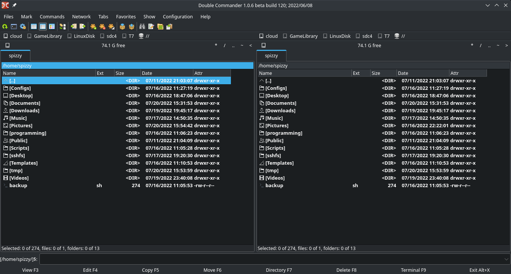

SFManager stands for Simple File Manager.
There are a lot file managers available like
dolphin,
thunar,
nautilus,
nemo,
etc.
But I wanted a solution that works for the desktop as well as for the servers.
There are some console based file managers like
nnn,
midnight commander,
ranger,
vifm,
etc.
I also wanted a simple but powerful file manager.
While the file managers listed previously are mostly simple and powerful, none of these file managers I liked 100%.
Of course the incentive was there to program one myself.
If you program one yourself, you know exactly how the filemanager behaves in different situations.
I mean it can't be that difficult to program a file manager anyway (or so I thought).
With all this in mind, I thought about what the file manager should be able to do.
Basically, a file manager should only be able to create, delete, open, move, rename and copy files/folders.
I was thinking how the filemanager should look like.
I liked the principle of a double panel file manager.
A double panel file manager is very practical in my opinion.
With a normal file manager I often found myself starting two instances and copying or moving something from one to the other.
With a double panel filemanager you don't have to do such things.
One file manager I like the most is doublecmd.
Doublecmd is a double panel file manager.
It is written in Pascal.

This is a typical double panel file manager.
At the bottom of the window it has different operations that you can perform.
These are also bound to the F keys.
You can even have multiple tabs open on one panel.
My file manager should have many practical functions.
For example, I could include the bulkrename tool to rename multiple files and so on.
This is my first big project that I will program in Rust.